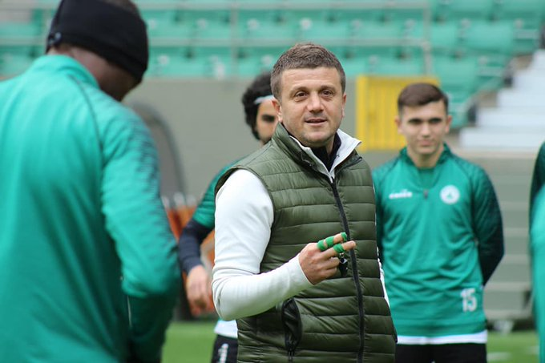
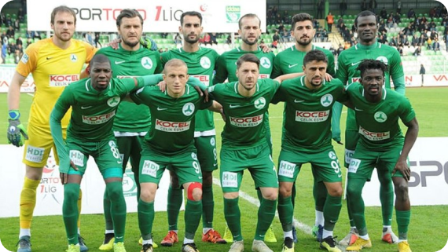
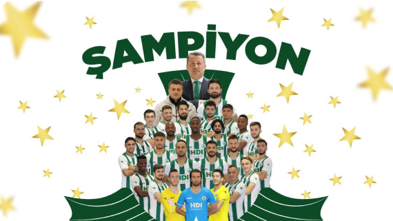
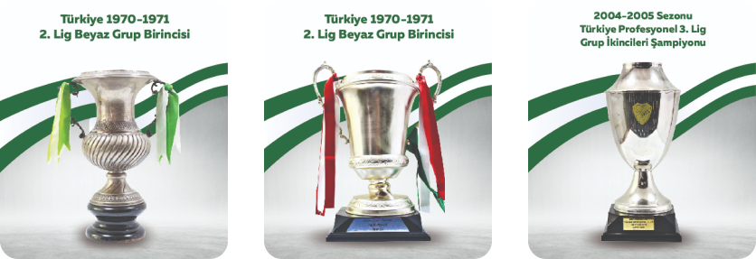

Giresunspor 1967
Giresunspor veya sponsorluk anlaşması gereğince GZT Giresunspor, Giresun ilinde ilk olarak 1925, daha sonra 1967 yılında tekrar kurulmuş olan bir spor kulübüdür. Kulübün lakabı Çotanaklar'dır. Çotanak, fındığın ağaç dalındaki haline denmektedir. Çotanak figürü kulübün armasında da mevcuttur.

Teknik Direktörümüz
Hakan Keleş, Türk eski futbolcudur. Profesyonel kariyerine 1993-94 sezonunda Edirnespor formasıyla 3. Lig'de başlayan futbolcu, 2006-07 sezonunda Çanakkale Dardenelspor'da futbolculuk kariyerini noktalamıştır. Ankaragücü, Bursaspor, Kayserispor, Antalyaspor gibi takımlarda da foma giymiştir. Teknik direktörlük kariyerine 2007-08 sezonunda Ankaragücü'nün U15 takımıyla başlayan Hakan Keleş, Giresunspor'un da U15 takımını çalıştırdı. Sivasspor gibi kulüpte de teknik direktörlük heyecanı yaşan Hakan Keleş hali hazırda Süper Lig'e çıkan Giresunspor'u çalıştırmaktadır. Giresunspor'umuzun 44 yıl süren Süper Lig hasretini bitirmiştir.
Kadromuz
Onurcan Piri, Hüsamettin Tut, Mamadou Diarra, Sergen Piçinciol, Hayrullah Bilazer, Anthonny Uzodimma, Mehmet Taş, Caner Hüseyin Bağ, Serginho, Abdou Razak Traore, İbrahime Balde


Süper Lig’deyiz!
TFF 1. Lig’de son hafta maçında Tuzlaspor’u deplasmanda 2-1 yenen Giresunsporumuz, 44 yıl aradan TFF 1. Lig' de şampiyon olarak yeniden Süper Lig’e adını yazdırdı.
KUPALARIMIZ
